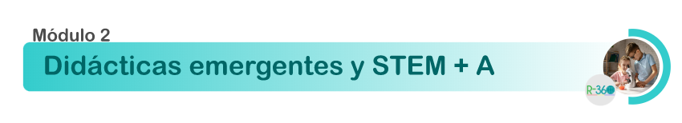

Ova diplomado 1
Módulo 2. Didácticas Emergentes y STEM+A
Bienvenidos al segundo módulo del diplomado, donde realizaremos una reflexión en torno a la innovación educativa y las didácticas emergentes, logrando identificar alternativas de solución propicias para las problemáticas de nuestras instituciones
Las actividades propuestas en el desarrollo de dicho módulo se orientan a la construcción del siguiente resultado de aprendizaje:
Obra publicada con Licencia Creative Commons Reconocimiento Compartir igual 4.0